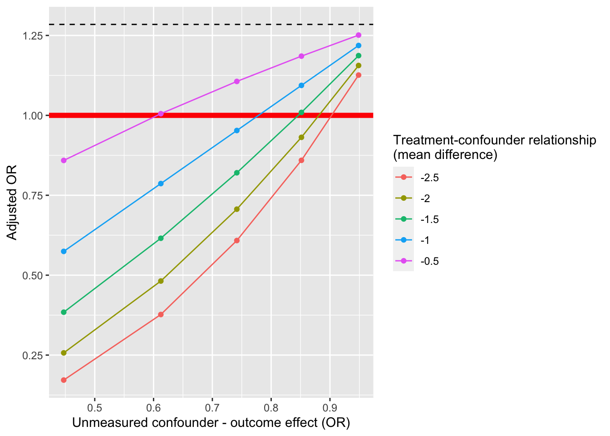

Topic 15 Sensitivity Analyses for Unmeasured Variables
Learning Goals
- Evaluate the sensitivity of findings to data quality and propose appropriate sensitivity analyses for a research investigation.
- Conduct and communicate the results of a sensitivity analysis for unmeasured confounding.
Slides from today are available here.
Example with the tipr package
Let’s go through a sensitivity analysis for the results of our tenure policy study. We estimated a causal odds ratio of 1.65 in our tenure policy analyses.
An unmeasured confounder that we might concerned about is “harshness of external reviewers.” We might conceive of quantifying this as the reviewers’ expectation of number of publications in the pre-tenure time period.
The adjust_or_with_continuous() function calculates updated (adjusted) causal odds ratios after considering a continuous unmeasured confounder (normal distribution with mean \(m_1\) in the treated group, mean \(m_0\) in the control group, and standard deviation of 1). The arguments are as follows:
effect_observed: The actual OR that we estimatedexposure_confounder_effect: Difference in means of the unobserved confounder in the treatment and control groups (\(m_1 - m_0\))confounder_outcome_effect: Relationship between the unmeasured confounder and the outcome (quantified with an odds ratio)verbose: Whether or not to display status messagesor_correction: Set toTRUEif the outcome prevalence is greater than 15%
library(tipr)
library(tidyverse)## ── Attaching core tidyverse packages ──────────────────────────────────────────────── tidyverse 2.0.0 ──
## ✔ dplyr 1.1.0 ✔ readr 2.1.4
## ✔ forcats 1.0.0 ✔ stringr 1.5.0
## ✔ ggplot2 3.4.1 ✔ tibble 3.1.8
## ✔ lubridate 1.9.2 ✔ tidyr 1.3.0
## ✔ purrr 1.0.1
## ── Conflicts ────────────────────────────────────────────────────────────────── tidyverse_conflicts() ──
## ✖ dplyr::filter() masks stats::filter()
## ✖ dplyr::lag() masks stats::lag()
## ℹ Use the conflicted package (<http://conflicted.r-lib.org/>) to force all conflicts to become errors# Below we set up a grid of 25 combinations of exposure_confounder_effect and confounder_outcome_effect using rep()
sens_results <- adjust_or_with_continuous(
effect_observed = 1.65,
exposure_confounder_effect = rep(-seq(0.5, by = 0.5, length.out = 5), times = 5),
confounder_outcome_effect = rep(seq(0.2, 0.9, length.out = 5), each = 5),
verbose = FALSE,
or_correction = TRUE
)
# The parameter combinations in the above analysis
data.frame(
exposure_confounder_effect = rep(-seq(0.5, by = 0.5, length.out = 5), times = 5),
confounder_outcome_effect = rep(seq(0.2, 0.9, length.out = 5), each = 5)
)## exposure_confounder_effect confounder_outcome_effect
## 1 -0.5 0.200
## 2 -1.0 0.200
## 3 -1.5 0.200
## 4 -2.0 0.200
## 5 -2.5 0.200
## 6 -0.5 0.375
## 7 -1.0 0.375
## 8 -1.5 0.375
## 9 -2.0 0.375
## 10 -2.5 0.375
## 11 -0.5 0.550
## 12 -1.0 0.550
## 13 -1.5 0.550
## 14 -2.0 0.550
## 15 -2.5 0.550
## 16 -0.5 0.725
## 17 -1.0 0.725
## 18 -1.5 0.725
## 19 -2.0 0.725
## 20 -2.5 0.725
## 21 -0.5 0.900
## 22 -1.0 0.900
## 23 -1.5 0.900
## 24 -2.0 0.900
## 25 -2.5 0.900ggplot(sens_results,aes(x = confounder_outcome_effect, y = rr_adjusted, color = factor(exposure_confounder_effect))) +
geom_hline(yintercept = sens_results$rr_observed[1], lty = 2) +
geom_hline(yintercept = 1, lwd = 2, color = "red") +
geom_point() +
geom_line() +
labs(x = "Unmeasured confounder - outcome effect (OR)", y = "Adjusted OR") +
guides(color = guide_legend(title = "Treatment-confounder relationship\n(mean difference)"))
Discussion questions
- The above analysis looked at an unmeasured confounder that has a clear negative relationship with tenure outcomes. This informed the choice of the
exposure_confounder_effectto be negative too.- What would you expect to happen to our sensitivity analysis results plot if the
exposure_confounder_effecthad been positive? (That is, if faculty at schools with clock-stopping policies had higher publication expectations from reviewers than at schools without clock-stopping policies.)
- What would you expect to happen to our sensitivity analysis results plot if the
- For those of you working on a data analysis (or a plan of a data analysis) for the final project, share your data context and research questions with others.
- What potential unmeasured confounders might you be concerned about in your analysis?
- How might you try to find reasonable values for the
exposure_confounder_effectandconfounder_outcome_effectparameters?